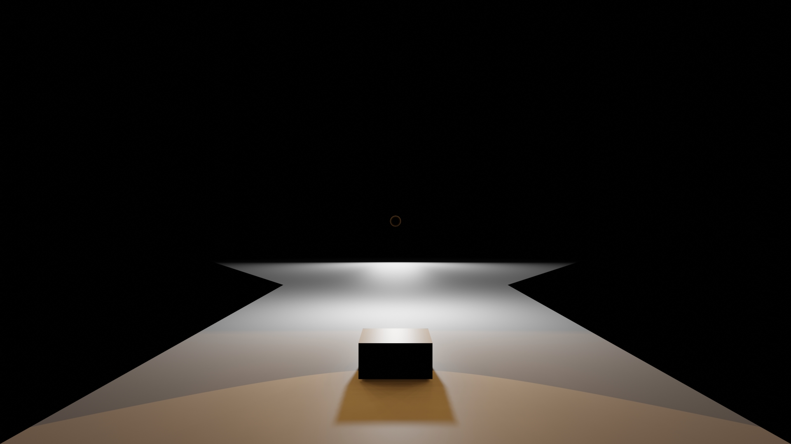

I have a degree in music from Eastern Oregon University.
Before moving to La Grande, Oregon to study music at EOU, I studied philosophy at Portland State University. My website at PSU is here.
My girlfriend makes amazing art. Check it out on her instagram @prizepersimmon.
I created this website with the help of the following things:
I’ve recently moved away from vimwiki as I find it too cumbersome.
I teach Brazilian jiu jitsu in La Grande, OR.